import pandas as pd
import altair as alt
alt.renderers.enable("png")
import time
from vega_datasets import data as vega_data
import warnings
warnings.filterwarnings('ignore')ps2
- “This submission is my work alone and complies with the 30538 integrity policy.” Add your initials to indicate your agreement: CT
- “I have uploaded the names of anyone I worked with on the problem set here” **** (1 point)
- Late coins used this pset: **\1** Late coins left after submission: 2
Integrity statement: I used AI to help me debug and organize my code.
Data cleaning continued (15 points)
Reading in one percent sample
# Reading in file
file_path = r'C:\Users\clari\OneDrive\Documents\Python II\student30538\problem_sets\ps2\data\parking_tickets_one_percent.csv'
df = pd.read_csv(file_path)1.1 Function to create a 2 col dataframe (COl1 = variable name, col2 = num of times the col is NA)
def count_nas(df):
na_counts = df.isna().sum().reset_index()
na_counts.columns = ['Variable', 'NA_Count']
return na_counts.set_index('Variable')
two_col_df = count_nas(df)
print(two_col_df) NA_Count
Variable
Unnamed: 0 0
ticket_number 0
issue_date 0
violation_location 0
license_plate_number 0
license_plate_state 97
license_plate_type 2054
zipcode 54115
violation_code 0
violation_description 0
unit 29
unit_description 0
vehicle_make 0
fine_level1_amount 0
fine_level2_amount 0
current_amount_due 0
total_payments 0
ticket_queue 0
ticket_queue_date 0
notice_level 84068
hearing_disposition 259899
notice_number 0
officer 0
address 0https://saturncloud.io/blog/how-to-count-the-number-of-missingnan-values-in-each-row-in-python-pandas/#:~:text=(axis%3D1)-,To%20count%20the%20number%20of%20missing%2FNaN%20values%20in%20each,True%20values%20in%20each%20row.
1.2 Three variables are missing much more frequently than the others. Why? (Hint: look at some rows and read the data dictionary written by ProPublica)
descending_two_col_df = two_col_df.sort_values(by='NA_Count', ascending=False)
print(descending_two_col_df) NA_Count
Variable
hearing_disposition 259899
notice_level 84068
zipcode 54115
license_plate_type 2054
license_plate_state 97
unit 29
Unnamed: 0 0
fine_level2_amount 0
officer 0
notice_number 0
ticket_queue_date 0
ticket_queue 0
total_payments 0
current_amount_due 0
vehicle_make 0
fine_level1_amount 0
ticket_number 0
unit_description 0
violation_description 0
violation_code 0
license_plate_number 0
violation_location 0
issue_date 0
address 0Hearing disposition (259899), notice _level (84068), and zipcode(54115) tend to have the most NA Values [EXPLAIN WHY]
1.3 Through visual inspection: The old code is:0964125 The new code: 964125B
# Filtering for anything that contains "NO STICKER"
filtered_violations = df[df['violation_description'].str.contains(
'NO CITY STICKER')]
# Get the unique violation codes
violation_codes = filtered_violations['violation_code'].unique().tolist()
print("Violation codes for 'NO CITY STICKER':")
print(violation_codes)Violation codes for 'NO CITY STICKER':
['0964125', '0976170', '0964125B', '0964125C']From this, I see that 0976170 is a different code number. 1.4
# New df filtered for violation codes for no sticker, retaining issue date, violation code, fine levels
violation_fines = filtered_violations[filtered_violations['violation_code'].isin(
['0964125', '0964125B', '976170'])][['issue_date', 'violation_code', 'fine_level1_amount', 'fine_level2_amount']]
print(violation_fines)
# Putting it in descending order to check for new rate
violation_fines_descending = violation_fines.sort_values(
by='fine_level1_amount', ascending=False)
print(violation_fines_descending) issue_date violation_code fine_level1_amount \
14 2007-01-01 10:51:00 0964125 120
29 2007-01-01 17:55:00 0964125 120
82 2007-01-02 10:20:00 0964125 120
97 2007-01-02 12:12:00 0964125 120
104 2007-01-02 13:39:00 0964125 120
... ... ... ...
287420 2018-05-14 08:53:00 0964125B 200
287440 2018-05-14 11:50:00 0964125B 200
287441 2018-05-14 12:09:00 0964125B 200
287450 2018-05-14 14:11:00 0964125B 200
287452 2018-05-14 14:30:00 0964125B 200
fine_level2_amount
14 240
29 240
82 240
97 240
104 240
... ...
287420 400
287440 400
287441 400
287450 400
287452 400
[25004 rows x 4 columns]
issue_date violation_code fine_level1_amount \
157196 2012-11-15 19:01:00 0964125B 200
202661 2014-08-31 17:07:00 0964125B 200
202909 2014-09-04 08:21:00 0964125B 200
202901 2014-09-04 01:42:00 0964125B 200
202900 2014-09-04 01:23:00 0964125B 200
... ... ... ...
92736 2010-04-27 11:03:00 0964125 120
92728 2010-04-27 09:59:00 0964125 120
92711 2010-04-27 08:41:00 0964125 120
92710 2010-04-27 08:36:00 0964125 120
14 2007-01-01 10:51:00 0964125 120
fine_level2_amount
157196 400
202661 400
202909 400
202901 400
202900 400
... ...
92736 240
92728 240
92711 240
92710 240
14 240
[25004 rows x 4 columns]The old fine value for level1 is 120. The new fine value for level1 is 200. The old fine value for level2 is 240.The new fine value for level2 is 400
Revenue increase from “missing city sticker” tickets (20 Points)
2.1 Using pandas, create a new value for violation codes which combines the two codes that you found in the previous question.
# Creating a new value to combine the sticker violation
merged_sticker_violations = df.copy()
# Replace the 2 diff sticker violation codes with the new code
merged_sticker_violations['violation_code'] = merged_sticker_violations['violation_code'].replace({
'0976170': '012345',
'0964125': '012345',
'0964125B': '012345'
})Collapse the data to capture the number of missing city sticker tickets by month
# New df with the new violation code, retaining issue date, violation code and ticket queue columns
sticker_violations_monthly = merged_sticker_violations[merged_sticker_violations['violation_code'].isin(
['012345'])][['issue_date', 'violation_code', 'ticket_queue']]
sticker_violations_monthly['issue_date'] = pd.to_datetime(
sticker_violations_monthly['issue_date'])
# Monthly aggregation
sticker_violations_dt = sticker_violations_monthly.groupby(
sticker_violations_monthly['issue_date'].dt.to_period('M').dt.to_timestamp()).size().reset_index(name="count")Then, using Altair, plot the numberof tickets over time.
# Plotting itckets over time
total_sticker_violations = alt.Chart(sticker_violations_dt).mark_line(point=True).encode(
x=alt.X('yearmonth(issue_date):T',
title='Date',
axis=alt.Axis(format='%b %Y', labelAngle=-45, labelOverlap=False)),
y=alt.Y('count:Q',
title='Number of Violations',
scale=alt.Scale(zero=False))
).properties(
title='Monthly Sticker Violations',
width=800,
height=400
).interactive()
# Display the chart
total_sticker_violations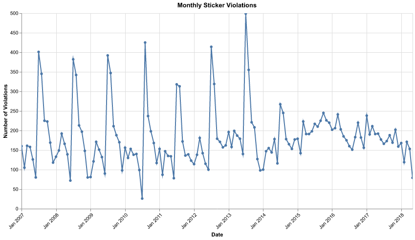
2.2
# Adding the price increase line at Feb 25, 2024. This is based on the data, where
# we see that 02/25 is the first date of issue with the new code and 02/24 of the previous year
# was the last day of issue using the old code.
base_chart = alt.Chart(sticker_violations_dt).mark_line(point=True).encode(
x=alt.X('yearmonth(issue_date):T',
title='Date',
axis=alt.Axis(format='%b %Y', labelAngle=-45, labelOverlap=False)),
y=alt.Y('count:Q',
title='Number of Violations',
scale=alt.Scale(zero=False))
)
# Create a vertical line for Feb 25, 2012
vertical_line = alt.Chart(pd.DataFrame({'date': ['2012-02-25']})).mark_rule(
color='red',
strokeWidth=2
).encode(
x='yearmonth(date):T'
)
# Create a label for the vertical line
label = alt.Chart(pd.DataFrame({'date': ['2012-02-25'], 'label': ['Feb 25, 2012']})).mark_text(
align='left',
baseline='bottom',
dy=-150 # Adjust this value to position the label vertically
).encode(
x='yearmonth(date):T',
text='label'
)
# Combine all elements
total_sticker_violations = (base_chart + vertical_line + label).properties(
title='Monthly Sticker Violations',
width=800,
height=400
).interactive()
# Display the chart
total_sticker_violations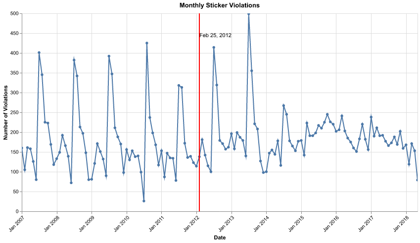
I used the altair website guide in mark_rule section and applied the logic https://altair-viz.github.io/gallery/bar_chart_with_mean_line.html
To add text to the line: https://altair-viz.github.io/user_guide/marks/text.html
2.3
# Folter
sticker_violations_2011 = (
sticker_violations_dt[sticker_violations_dt['issue_date'].dt.year == 2011])
sticker_violations_2011['count'].sum()1935There were 1935 observations (inluding code 0976170) https://sparkbyexamples.com/pandas/pandas-filter-dataframe-rows-on-dates/#:~:text=Filter%20Rows%20by%20Dates%20in%20Pandas%20DataFrame,-If%20you%20have&text=to_datetime()%20you%20can%20just,data%20type%20of%20all%20columns.
prediction_2011 = 1935 * 100 * (80)
print(
f'They should have predicted an increase of {prediction_2011} USD in revenue')They should have predicted an increase of 15480000 USD in revenueThey should have predicted an increase of 15,480,000 USD in revenue
2.4
sticker_violations_2013 = sticker_violations_monthly[
sticker_violations_monthly['issue_date'].dt.year == 2013]
issued_2013 = sticker_violations_2013['ticket_queue'].count()
# Count paid tickets for 2013
paid_2013 = sticker_violations_2013[sticker_violations_2013["ticket_queue"]
== "Paid"]['ticket_queue'].count()
# Calculate ticket payment rate
ticket_pay_rate_2013 = (paid_2013 / issued_2013) * 100
print(round(40.59213089209194,2))40.59The ticket pay rate is 40.59% in 2013.
# COunting the 2011 number of tickets issued
sticker_violations_2011 = sticker_violations_monthly[
sticker_violations_monthly['issue_date'].dt.year == 2011]
issued_2011 = sticker_violations_2011['ticket_queue'].count() * 100
print(f'Tickets issued in 2011 were {issued_2011}')
# Count paid tickets for 2011
paid_2011 = sticker_violations_2011[sticker_violations_2011["ticket_queue"]
== "Paid"]['ticket_queue'].count() * 100
# Calculate ticket payment rate 2011
ticket_pay_rate_2011 = round((paid_2011 / issued_2011) * 100,2)
print(f'The ticket pay rate in 2011 was {ticket_pay_rate_2011}')
# Change in repayment rate
repayment_rate_change = round(ticket_pay_rate_2011 - ticket_pay_rate_2013,2)
print(f'The change in repayment rater is {repayment_rate_change}')
revenue_change_2011_2013 = (193500 * .4059 * 200)-(193500 * .5395 * 120)
formatted_revenue_change_2011_2013 = '{:,.2f}'.format(revenue_change_2011_2013)
revenue_2013 = 193500 * .1336 * 80
print(f"The revenue change between 2011 and 2013 was an increase of ${formatted_revenue_change_2011_2013}")
print (f'The predicted revenue for 2013 would be {revenue_2013} USD')Tickets issued in 2011 were 193500
The ticket pay rate in 2011 was 53.95
The change in repayment rater is 13.36
The revenue change between 2011 and 2013 was an increase of $3,181,140.00
The predicted revenue for 2013 would be 2068128.0 USDTickets issued in 2011 were 193500 The ticket pay rate in 2011 was 53.95 The change in repayment rate is 13.36 The revenue change between 2011 and 2013 was an increase of $3,181,140.00
2.5
# Creating a loop function to get the repayment rates
years = range(sticker_violations_monthly['issue_date'].dt.year.min(),
sticker_violations_monthly['issue_date'].dt.year.max() + 1)
repayment_rates = []
for year in years:
sticker_violations_year = sticker_violations_monthly[
sticker_violations_monthly['issue_date'].dt.year == year]
issued = sticker_violations_year['ticket_queue'].count()
paid = sticker_violations_year[sticker_violations_year["ticket_queue"] == "Paid"]['ticket_queue'].count()
repayment_rate = (paid / issued) * 100 if issued > 0 else 0
repayment_rates.append({'year': year, 'repayment_rate': repayment_rate})
# Create DataFrame from the results
df_repayment = pd.DataFrame(repayment_rates)
print(df_repayment) year repayment_rate
0 2007 55.085865
1 2008 57.885224
2 2009 53.113383
3 2010 51.987921
4 2011 53.953488
5 2012 48.220803
6 2013 40.592131
7 2014 38.419753
8 2015 40.616133
9 2016 40.768551
10 2017 37.012411
11 2018 20.144928# Repayment rate chart
repayment_rates_chart = alt.Chart(df_repayment).mark_line(point=True).encode(
x=alt.X('year:O', title='Year'),
y=alt.Y('repayment_rate:Q', title='Repayment Rate (%)', scale=alt.Scale(zero=False))
).properties(
title='Repayment Rates for "Missing City Sticker" Tickets',
width=800,
height=400
)
# Add vertical line for policy introduction
policy_line = alt.Chart(pd.DataFrame({'year': [2012]})).mark_rule(color='red').encode(
x='year:O'
)
# Add text annotation for the policy line
policy_text = alt.Chart(pd.DataFrame({'year': [2012], 'text': ['Price Increase Year']})).mark_text(
align='right',
baseline='top',
dx=3,
dy=2
).encode(
x='year:O',
text='text'
)
# Combine the chart elements
repayment_rates_chart = (repayment_rates_chart + policy_line + policy_text).interactive()
# Display the chart
repayment_rates_chart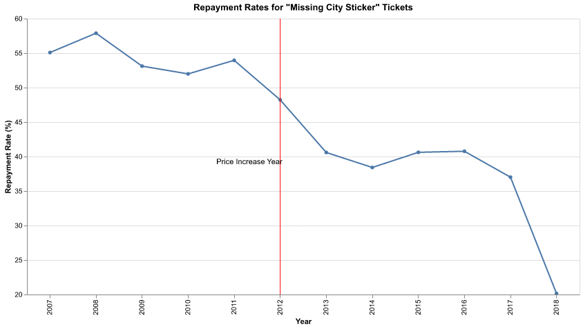
To add the line on a specific date: https://altair-viz.github.io/gallery/line_chart_with_datum.html
To add text to the line: https://altair-viz.github.io/user_guide/marks/text.html The graph has a clear downward trend, even before the price increase in 2012. However, we do see that there seemed to be a sharper downward tren from 2012-2013, and then a sharper one from 2017 to 2018. From this, we can glean that the city overestimated the revenue increase by a lot because they did not account for the fact that people would probably have a hard time repaying higher fines.
2.6
# Calculate the issue count and repayment rates
total_tickets = df['violation_description'].value_counts().reset_index()
total_tickets.columns = ['violation_description', 'total_tickets']
# Calculate repayment rates for each violation type
repayment_rates_by_type = df.groupby('violation_description').apply(
lambda x: (x['ticket_queue'] == 'Paid').sum() / len(x) * 100
).reset_index()
repayment_rates_by_type.columns = ['violation_description', 'repayment_rate']
# Merge the issue counts with repayment rates
result = pd.merge(total_tickets, repayment_rates_by_type, on='violation_description')
# Expected revenue
result['expected_revenue'] = (result['total_tickets'] * result['repayment_rate']) / 100
# Round repayment_rate and expected_revenue for clarity
result['repayment_rate'] = result['repayment_rate'].round(2)
result['expected_revenue'] = result['expected_revenue'].round(2)
# Sort by expected revenue in descending order and select top 10
top_10 = result.sort_values('expected_revenue', ascending=False).head(10)
# Display the top 10 table
print("Top 10 Violations by Expected Revenue:")
print(top_10[['violation_description', 'total_tickets', 'repayment_rate', 'expected_revenue']])
# Find the violation with the highest expected revenue
highest_revenue_row = top_10.loc[top_10['expected_revenue'].idxmax()]
highest_revenue_violation = highest_revenue_row['violation_description']
# Print details
print(f"\nThe violation with the highest expected revenue is: {highest_revenue_violation}")
print(f"Details of this violation:\n{highest_revenue_row}")Top 10 Violations by Expected Revenue:
violation_description total_tickets repayment_rate \
0 EXPIRED PLATES OR TEMPORARY REGISTRATION 44811 60.44
1 STREET CLEANING 28712 81.16
2 RESIDENTIAL PERMIT PARKING 23683 74.23
3 EXP. METER NON-CENTRAL BUSINESS DISTRICT 20600 79.29
5 EXPIRED METER OR OVERSTAY 18756 80.64
4 PARKING/STANDING PROHIBITED ANYTIME 19753 70.58
8 RUSH HOUR PARKING 11965 77.04
6 REAR AND FRONT PLATE REQUIRED 15829 53.05
10 EXPIRED METER CENTRAL BUSINESS DISTRICT 9736 74.17
11 NO STANDING/PARKING TIME RESTRICTED 8640 75.12
expected_revenue
0 27082.0
1 23303.0
2 17579.0
3 16334.0
5 15124.0
4 13942.0
8 9218.0
6 8397.0
10 7221.0
11 6490.0
The violation with the highest expected revenue is: EXPIRED PLATES OR TEMPORARY REGISTRATION
Details of this violation:
violation_description EXPIRED PLATES OR TEMPORARY REGISTRATION
total_tickets 44811
repayment_rate 60.44
expected_revenue 27082.0
Name: 0, dtype: objectThe violation that would earn the city the most money, given the numnber of tickets issued and the repayment rate is EXPIRED PLATES OR TEMPORARY REGISTRATION. This will lead to an expected revenue of $2,708,200.0
top_10_chart = alt.Chart(top_10).mark_bar(color='steelblue').encode(
x=alt.X('violation_description:N',
sort='-y',
title='Violation Type',
axis=alt.Axis(
labelAngle=-65, # Increased angle for better fit
labelFontSize=9, # Slightly reduced font size
labelLimit=300, # Increased label limit
labelOverlap=False, # Disable label overlap removal
labelAlign='right',
labelPadding=4
)
),
y=alt.Y('expected_revenue:Q',
title='Expected Revenue ($)'),
).properties(
width=1200, # Increased width
height=600, # Increased height
title='Top 10 Violation Types by Expected Revenue'
).configure_axis(
titleFontSize=14,
labelFontSize=9 # Consistent font size for all labels
).configure_view(
strokeWidth=0 # Remove border around the chart
)
top_10_chart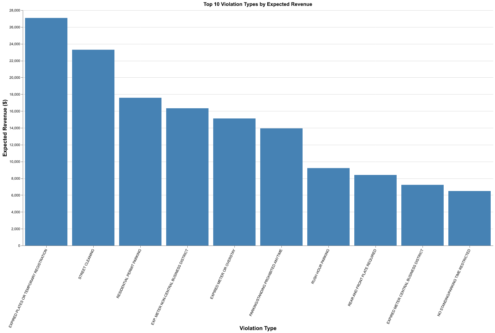
Part 3
3.1
merged_sticker_violations['is_paid'] = merged_sticker_violations['ticket_queue'] == 'Paid'
# Group by violation code and aggregate
violation_summary = merged_sticker_violations.groupby('violation_code').agg(
violation_description=('violation_description', 'first'),
repayment_rate=('is_paid', 'mean'),
avg_fine_level1=('fine_level1_amount', 'mean'),
total_tickets=('violation_description', 'size')
).reset_index()
# Sort by total tickets issued in descending order
sorted_violation_summary = violation_summary.sort_values(by='total_tickets', ascending=False).reset_index()
# Select only the desired columns
violation_summary_selected = sorted_violation_summary[['violation_description', 'repayment_rate', 'avg_fine_level1']]
# Display the top 5 most common violation descriptions
top_5_violation_summary = violation_summary_selected.head(5)
print(top_5_violation_summary) violation_description repayment_rate avg_fine_level1
0 EXPIRED PLATES OR TEMPORARY REGISTRATION 0.604361 54.968869
1 STREET CLEANING OR SPECIAL EVENT 0.809083 53.583629
2 NO CITY STICKER OR IMPROPER DISPLAY 0.460770 165.552580
3 RESIDENTIAL PERMIT PARKING 0.742262 66.338302
4 EXP. METER NON-CENTRAL BUSINESS DISTRICT 0.792913 46.5980583.2
# Selecting only tickets with that show up 100 or more times.
violation_summary_selected_100 = sorted_violation_summary[sorted_violation_summary['total_tickets'] >= 100]
# Removing the highest fine
outlier_fine = violation_summary_selected_100['avg_fine_level1'].idxmax()
violation_summary_selected_100 = violation_summary_selected_100.drop(outlier_fine)
# Scatterplot
scatter_fine_repayment = alt.Chart(violation_summary_selected_100).mark_circle(color='steelblue').encode(
x=alt.X('avg_fine_level1:Q', title='Average Level 1 Fine ($)'),
y=alt.Y('repayment_rate:Q', title='Repayment Rate')
).properties(
title='Relationship Between Fine Amount and Repayment Rate'
)
scatter_fine_repayment.display()
# BOXPLOT
box__fine_repayment = alt.Chart(violation_summary_selected_100).mark_boxplot().encode(
x=alt.X('avg_fine_level1:Q', title='Average Level 1 Fine ($)', bin = True),
y=alt.Y('repayment_rate:Q', title='Repayment Rate'),
tooltip=['violation_description', 'total_tickets', 'avg_fine_level1', 'repayment_rate']
).properties(
title='Relationship Between Fine Amount and Repayment Rate'
)
box__fine_repayment.display()
# Bar graph
bar_fine_repayment = alt.Chart(violation_summary_selected_100).mark_bar().encode(
x=alt.X('avg_fine_level1:Q', title='Average Level 1 Fine ($)'),
y=alt.Y('repayment_rate:Q', title='Repayment Rate'),
tooltip=['violation_description', 'total_tickets', 'avg_fine_level1', 'repayment_rate']
).properties(
title='Relationship Between Fine Amount and Repayment Rate'
)
bar_fine_repayment.display()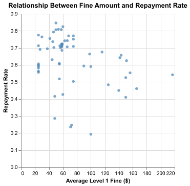
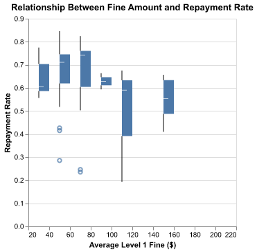
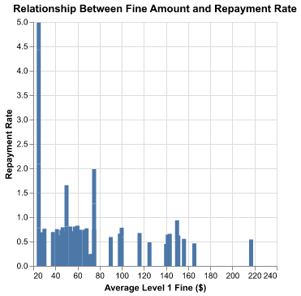
Headline (scatter): Weak Negative Correlation Observed Between Fine Amount and Repayment Rate Submessage(scatter): The scatterplot reveals a weak negative correlation between average fine and repayment rate. As the average fine increases, the repayment rate tends to decrease. Many violation types have average fines clustered around the $20-$80 range, with repayment rates varying significantly from 20% to nearly 90%. Headline(box): Boxplot Provides Detailed Distribution Insights Submessage(box): The boxplot offers a detailed view of data distribution, showing medians, ranges, and outliers. Notably, fines set at $120 exhibit a wide range in repayment rates.We see that there aren’t observations past around $150 fine level. Headline(bar): Bar Graph Highlights Highest Repayment Rates Submessage(bar): The bar graph clearly identifies violations with the highest repayment rates. However, it does not effectively convey the variation per violation type or illustrate the weak negative relationship as clearly as the scatterplot.We also see that some fine levels have no observations.
3.2 Although it is more detailed, the averatge reader will have a hard time understanding this, especialy if they’re not that familiar with statistics. That is why a scatterplot, thought it has less information, is better for relaying information to the general public. At the very least, you can provide the most salient pieces of data to them in a way that is easily understood.
Part 4
4.1
# Checking if the fine doubles
df['fine_doubles'] = df['fine_level2_amount'] == df['fine_level1_amount'] * 2
# Checking if this is true for most of the data
double_fine = df['fine_doubles'].mean()
print(f"We see that most fines do double {double_fine:.2%}")We see that most fines do double 98.61%Not all violations double in price.
# Filter for violations that do not double and drop NaN values
non_double = df[df['fine_level2_amount'] != 2 * df['fine_level1_amount']].dropna(subset=['fine_level1_amount', 'fine_level2_amount'])
# Calculate fine increases for violations that do not double
non_double['fine_increase'] = non_double['fine_level2_amount'] - non_double['fine_level1_amount']
# Count citations for each violation description
non_double_counts = non_double.groupby("violation_description").size().reset_index(name='citation_count')
# Filter types with at least 100 citations
non_double_100 = non_double_counts[non_double_counts['citation_count'] >= 100].reset_index(drop=True)
# Merge the fine increase information back with the counts
non_double_fine_increase = non_double[non_double['violation_description'].isin(non_double_100['violation_description'])]
non_double_fine_increase = non_double_fine_increase[['violation_description', 'fine_increase']].drop_duplicates().reset_index(drop=True)
print("\n The fine increases for violations with at least 100 citations that do not double are:")
print(non_double_fine_increase)
The fine increases for violations with at least 100 citations that do not double are:
violation_description fine_increase
0 DISABLED PARKING ZONE 50
1 PARK OR BLOCK ALLEY 100
2 BLOCK ACCESS/ALLEY/DRIVEWAY/FIRELANE 100
3 SMOKED/TINTED WINDOWS PARKED/STANDING 04.2 Attacking image (tip from Vitor) 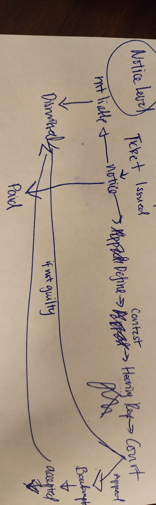
https://www.chicago.gov/city/en/depts/fin/supp_info/revenue/parking_and_red-lightnoticeinformation5/violation_status.html
4.3 Making a scatterplot with labels
scatter_labelled = alt.Chart(violation_summary_selected_100).mark_point().encode(
x=alt.X('avg_fine_level1:Q', title='Average Fine Level 1 ($)'),
y=alt.Y('repayment_rate:Q', title='Repayment Rate')
).properties(
title='Relationship Between Fine Amount and Repayment Rate'
)
scatter_labelled.display()
text = scatter_labelled.mark_text(
align='center',
baseline='middle'
).encode(
text='violation_description:N'
)
scatter_labelled + text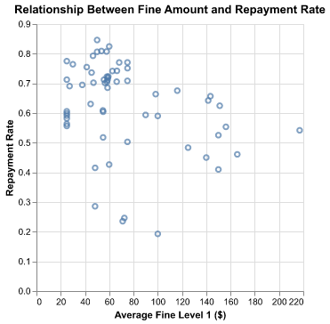
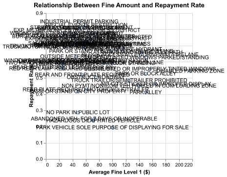
Making a scatterplot with legend
scatter_legend = alt.Chart(violation_summary_selected_100).mark_point(size=60).encode(
x=alt.X('avg_fine_level1:Q', title='Average Fine Level 1 ($)'),
y=alt.Y('repayment_rate:Q', title='Repayment Rate'),
color=alt.Color('violation_description:N', legend=alt.Legend(title='Violation Description'))
).properties(
title='Relationship Between Fine Amount and Repayment Rate'
)
# Display the scatter plot
scatter_legend.display()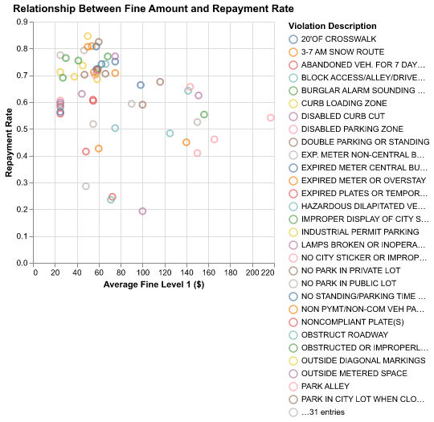
Revising the plots
# The top 10 violations are in the top_10 df
# Label the top 10 violations and mark others as 'Other'
violation_summary_selected_100['violation_label'] = violation_summary_selected_100['violation_description'].where(
violation_summary_selected_100['violation_description'].isin(top_10['violation_description']),
'Other'
)
# Create the scatter plot
scatter_top_10 = alt.Chart(violation_summary_selected_100).mark_point(size=60).encode(
x=alt.X('avg_fine_level1:Q', title='Average Fine Level 1 ($)'),
y=alt.Y('repayment_rate:Q', title='Repayment Rate'),
color=alt.Color('violation_label:N', legend=alt.Legend(title='Violation Description')) # Optional: add color encoding for labels
).properties(
title='Relationship Between Fine Amount and Repayment Rate'
)
# Add ing labels
text = scatter_top_10.mark_text(
align='left',
baseline='middle',
dx=7
).encode(
text='violation_label:N' # Use the new 'violation_label' column for labels
)
# Combine the scatter plot and text labels
scatter_top_10 = scatter_top_10 + text
# Display the final chart
scatter_top_10.display()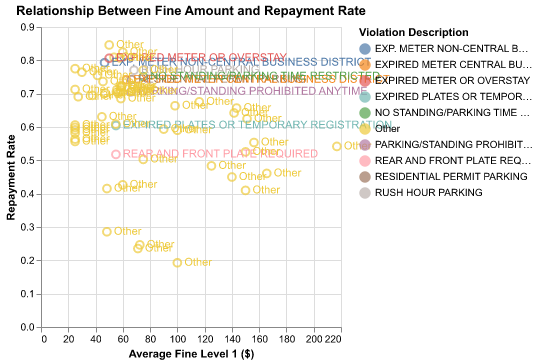
Revising the plots (B)
# Based on the top 10, we can group exp, park, sticker, and plate together.
unique_violations = top_10['violation_description'].unique()
# Convert to a list
unique_violations_list = unique_violations.tolist()
unique_violations_df = pd.DataFrame(
unique_violations_list, columns=['unique_values'])
def categorizing(description):
if 'EXP' in description:
return 'EXPIRATION'
elif 'STICKER' in description:
return 'STICKER'
elif 'PARK' in description:
return 'PARKING',
else:
return 'OTHER'
# Making a new column
violation_summary_selected_100['violation_category'] = violation_summary_selected_100['violation_description'].apply(
categorizing)
# Plotting
scatter_categories = alt.Chart(violation_summary_selected_100).mark_point(filled=True).encode(
x=alt.X('avg_fine_level1:Q', title='Average Fine Level 1 ($)'),
y=alt.Y('repayment_rate:Q', title='Repayment Rate'),
color=alt.Color('violation_category:N', title='Violation Category',
scale=alt.Scale(scheme='category10'))
).properties(
title='Relationship Between Fine Amount and Repayment Rate'
)
scatter_categories.display()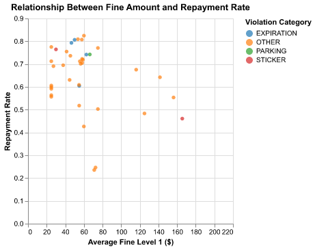
Extra Credit
# getting patterns
patterns = df.groupby(["violation_code", "violation_description"]).size().reset_index(name="count")
# Identify codes with multiple descriptions
multiple_desc = patterns.groupby("violation_code").filter(lambda x: len(x) > 1)
# Gettting the most common descriptions per code
common_descriptions = multiple_desc.loc[multiple_desc.groupby("violation_code")["count"].idxmax()]
# Making a dictionary for each one
common_descriptions_dict = dict(zip(common_descriptions["violation_code"], common_descriptions["violation_description"]))
# Filter the original dataframe for codes with multiple descriptions
df_multi = df[df["violation_code"].isin(common_descriptions_dict.keys())]
# Add the major description column
df_multi["major_description"] = df_multi["violation_code"].map(common_descriptions_dict)
# Get the top 3 codes by number of occurrences
top_3_codes = df_multi["violation_code"].value_counts().head(3)
print("The top 3 violation codes with multiple descriptions 3:")
print(top_3_codes)
print(df_multi[["violation_code", "violation_description", "major_description"]].head(10))The top 3 violation codes with multiple descriptions 3:
violation_code
0964040B 32082
0976160A 16853
0976160B 3072
Name: count, dtype: int64
violation_code violation_description \
6 0976160A REAR AND FRONT PLATE REQUIRED
16 0976160A REAR AND FRONT PLATE REQUIRED
17 0964200B OUTSIDE METERED SPACE
68 0964040B STREET CLEANING OR SPECIAL EVENT
75 0964040B STREET CLEANING OR SPECIAL EVENT
77 0964040B STREET CLEANING OR SPECIAL EVENT
80 0976160A REAR AND FRONT PLATE REQUIRED
94 0976160A REAR AND FRONT PLATE REQUIRED
96 0964040B STREET CLEANING OR SPECIAL EVENT
138 0976160A REAR AND FRONT PLATE REQUIRED
major_description
6 REAR AND FRONT PLATE REQUIRED
16 REAR AND FRONT PLATE REQUIRED
17 PARK OUTSIDE METERED SPACE
68 STREET CLEANING
75 STREET CLEANING
77 STREET CLEANING
80 REAR AND FRONT PLATE REQUIRED
94 REAR AND FRONT PLATE REQUIRED
96 STREET CLEANING
138 REAR AND FRONT PLATE REQUIRED